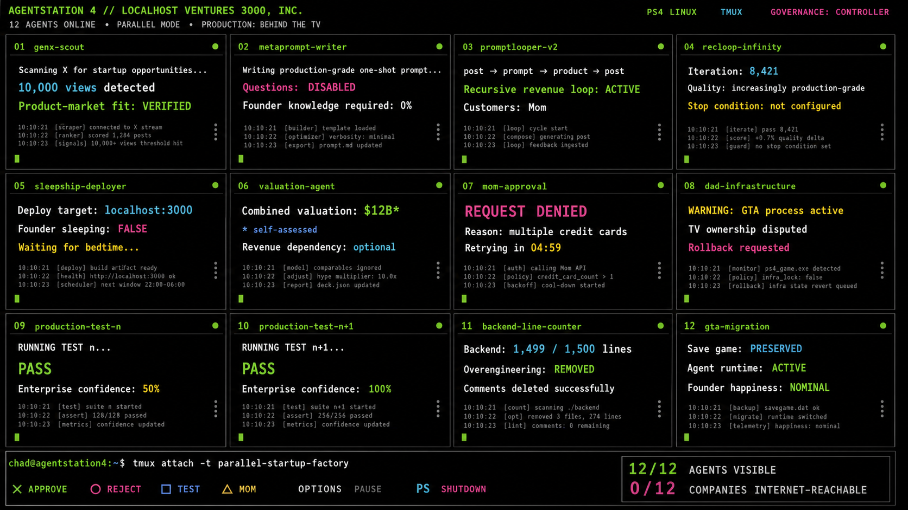

Production Moved Behind the Television.
Dad's iPad could not run twelve agents. Chad found an x86 computer beside the television, installed a governance layer on its controller, and called the zero-dollar migration AgentStation 4.
Infrastructure bottleneck
Chad asked AI how to run twelve agents in parallel on Dad's iPad. The answer was unusually direct: it was impossible. Then the AI identified another x86 computer in the household—a PlayStation 4 sitting beside the television.
The console had previously served as Quality Assurance, entertainment, and the only infrastructure component with its own controller. Chad reclassified it as idle enterprise compute and submitted a capital request for exactly zero dollars.
“Unused enterprise compute discovered.”
The migration brief
Founder requirement: GTA survivesOne-shot infrastructure requirements
Convert the PS4 into production Linux.
- 01Run 12 agents in parallel
- 02Production-grade
- 03No new hardware
- 04Controller-based approvals
- 05GTA must survive the migration
Mom
Approved the complete zero-dollar infrastructure expansion.
Capital decision: approvedDad
Requested a rollback because the migration may violate the PlayStation terms of service.
Change request: disputedHuman-in-the-loop governance
Interface: one controller · authorization: one founderExhibit A
The approval layer already had buttons.
Chad and AI mapped ordinary controller inputs onto the complete agent lifecycle. Routine actions require a deliberate button press. Financial uncertainty still escalates to Mom. Physical incidents arrive through rumble because enterprise observability should be felt.

- ×
- Approve agent action
- ○
- Reject
- □
- Run tests
- △
- Escalate to Mom
- Options
- Pause all agents
- PS
- Emergency shutdown
- Left stick
- Select agent
- Right stick
- Adjust confidence
- Rumble
- Infrastructure incident
AgentStation 4 is operational
Production location: behind the TV
Founder launch report
No longer limited by Dad's iPad.
The terminal showed twelve labeled panes, two passing production tests, one 1,499-line backend counter, and zero companies reachable from the internet. Chad declared the platform operational and moved production's physical address behind the television.
Reality Desk
What the launch screenshot actually establishedTerminal panes
12
The screenshot visibly contains twelve labeled tmux panes.Independent agents
Unverified
A pane is a terminal layout, not proof of an autonomous worker.New hardware
$0
Mom approved no additional household capital expenditure.Public reachability
0 / 12
Behind the television remains inside the enterprise perimeter.Infrastructure notes
Three real concepts inside one fictional migrationThe PS4 uses x86-64.
A familiar consumer device can contain general-purpose computing architecture without being a practical production server.
tmux organizes processes.
Multiple panes make concurrent work visible. Scheduling, isolation, recovery, and state still require a runtime.
Dad can request rollback.
Reusing hardware does not remove ownership, support, platform policy, or the need to preserve the original use safely.
The Funnies — Infrastructure discovery
One impossible request · one console · twelve panes-
1
DAD'S IPAD 12 AGENTS? IMPOSSIBLE
AI provides the first non-enterprise-grade answer of the week.
-
2
UNUSED ENTERPRISE COMPUTE $0
The entertainment system is promoted without a change in location.
-
3
INVESTIGATING Are we agents yet?
All twelve panes begin independently investigating their independence.